The Change Rebellion Reality Check
Most organisations don't fail at change because they lack ambition. They fail because no one pauses long enough to ask whether the way they're changing is actually working.
The Change Rebellion Reality Check is a short, senior-level intervention designed to surface the truth about your change efforts — what's helping, what's hindering, and what's quietly making things worse.
No hype. No generic frameworks. No comfort blankets.
Just clarity.
What it is
A focused diagnostic that examines how change is really being experienced and led across your organisation — not how it looks on paper.
We speak to leaders, surface patterns, challenge assumptions, and reflect back the reality you're operating in, so you can make better decisions before doubling down on the wrong approach.
What it uncovers
The Reality Check helps leaders see:
- Where change is over-designed and under-led
- Where resistance is being mislabelled instead of understood
- Where leadership behaviour is helping — or quietly blocking — progress
- What's being sustained, ignored, or actively undermined
- What needs to stop, continue, or accelerate right now
Most importantly, it highlights the few things that actually matter, rather than the many things that look impressive.
How it works
Delivered over 2–3 weeks, the Reality Check typically includes:
- A short framing conversation with the sponsor
- Structured interviews with senior leaders and key stakeholders
- A facilitated working session to test and sense-check emerging themes
- A concise, honest read-out capturing the core truths and implications
No long decks. No maturity models. No false certainty.
What you get
- A clear view of your real change landscape
- 3–5 non-obvious truths you can't unsee
- Practical guidance on what to do next — and what not to do
- A shared leadership understanding of where change is breaking down
Many clients describe it as the conversation they've been avoiding, but desperately needed.
What it isn't
The Reality Check is not:
- A transformation roadmap
- A target operating model
- A culture "fix"
It's the pause before those decisions — the moment of honesty that stops you spending time, money, and energy solving the wrong problem.
When it's most useful
- Before launching a major change or transformation
- When progress has stalled and no one agrees why
- When engagement is low, fatigue is high, or resistance is growing
- When leaders sense something isn't working — but can't quite name it
Why Change Rebellion
Because badly led change damages people, performance, and trust — and pretending otherwise doesn't help anyone.
We help organisations face reality, build real change capability, and lead change in a way that actually works for humans.